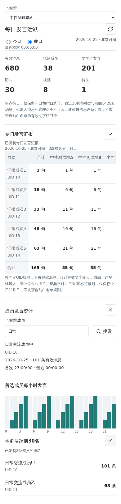
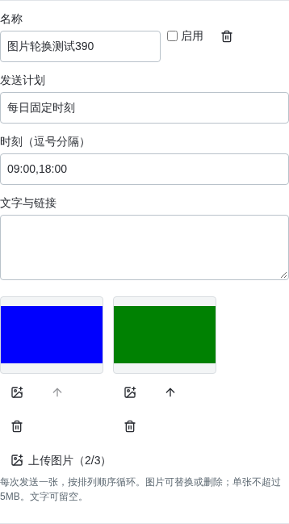
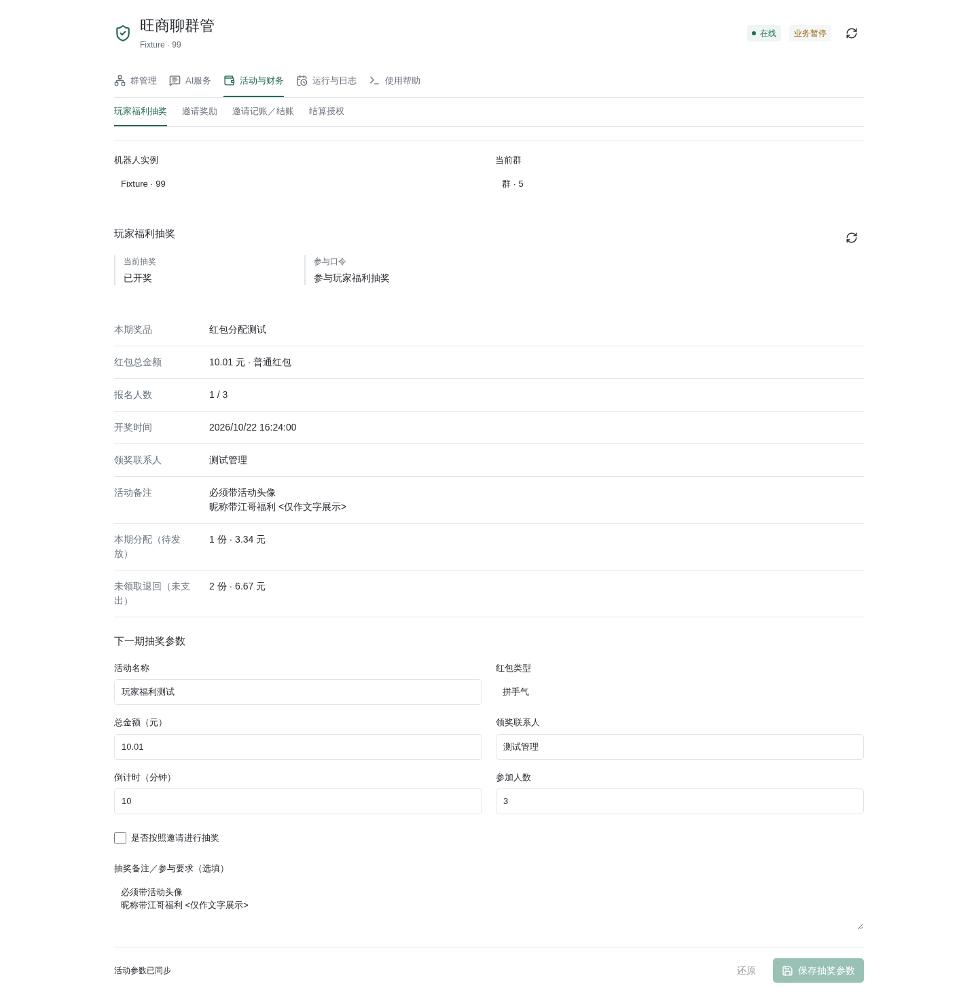
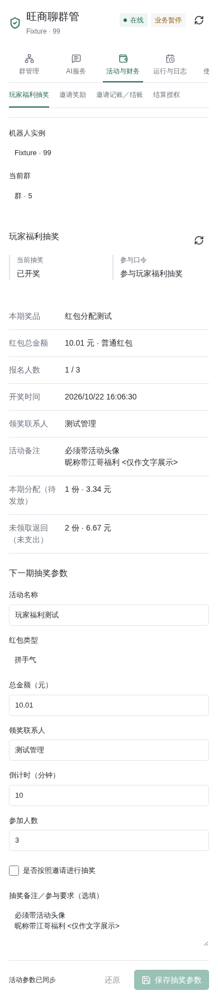
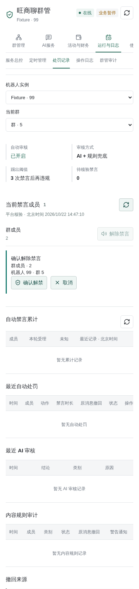
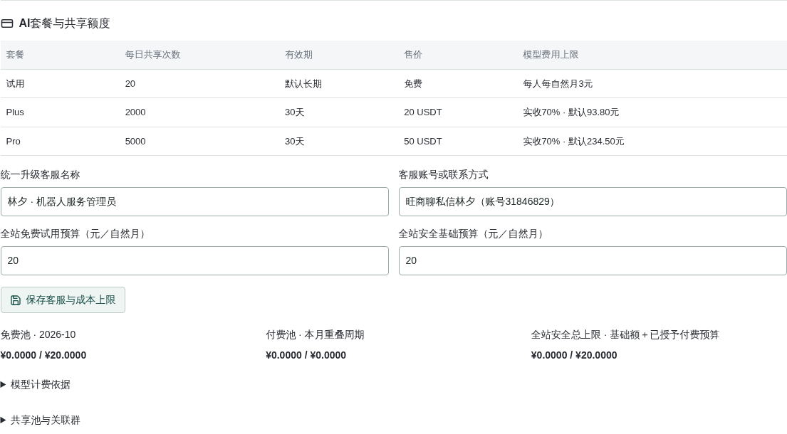
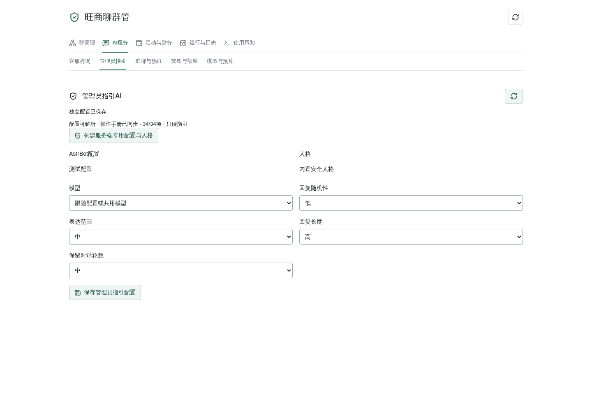

An administrator mentions one member using the real client selector, or replies
to their verifiable same-group message, and sends 解除黑名单 (alias
移除黑名单). The bot removes the entry and attempts to unmute, reporting both
results. Private-chat and Dashboard removal only remove the entry; independent
unmuting does not remove it. Do not retry an unknown outcome. Older dated
removal-only notes do not describe this current in-group command.
Open Wangshangliao Management → Groups → Speech Activity, select the bot and group, then choose today or yesterday. Beijing midnight starts a new daily count; only the previous and current dates are retained, not a long-term activity history. Group totals include active members, message types, hourly distribution and top 30. Search a member name or UID and select the matching member for separate daily statistics. Recalled/violating messages, bots and commands do not count; the newest 30 seconds await verification. Automatic whitelist eligibility is unchanged. The copy icon beside the ranking copies the selected date's top 30 with group name/ID, date, rank, member name/UID and message count. Empty or incomplete rankings cannot be copied. A browser denial displays an error, never a false success.
Bots with a configured Focused Speech Report also show exact-UID member totals by configured group, per-member combined totals and the combined team total. The Today/Yesterday selection applies to this report; its copy icon includes the complete group breakdown. Only effective text counts as chat sentences: images, videos, forwards, recalled/violating messages, bots and commands are excluded. The newest 30 seconds await verification, and only today/yesterday are retained. Incomplete reports cannot be copied. A disabled configured group blocks the whole report rather than silently shrinking its scope. Reports do not post into groups or change whitelist/moderation settings.

Current flood thresholds are five messages in three seconds, fifteen in ten
seconds, or five identical texts in thirty seconds. Each penalty cycle gives
three recall warnings, then one-, three- and ten-minute mutes. Warning grace
restarts only after the final ten-minute mute expires; unknown receipts do not
reset the cycle or trigger retries. A continuous burst counts as one violation.
发言排行榜, 发言排行 and 排名 show today's effective text ranking.
Automatic speech-whitelist grants now require both a top30 position in yesterday's
Beijing-day ranking and more than100 eligible texts (at least101) yesterday.
Today's messages do not qualify a member today, and excluded positions are not
filled from rank31 onward. Grants refresh every30seconds and recalculate from the
new previous day at Beijing midnight. Recalled or uncertain-recall
messages do not count; the most recent30seconds are not yet eligible for grants.
Existing limits of one counted text per member per30seconds and identical-text
deduplication over five minutes remain. Media-only messages and commands are not
counted. Manual grants remain intact; blacklist entries take priority. An explicit
removal suppresses automatic readdition for the rest of that Beijing day.
See the maintenance record for dated
deployment evidence and offline coverage. No new real-user penalty-cycle trial
or official-phone acceptance is claimed.
Configure features directly in the Wangshangliao plugin: Group Management →
Activation / Rules, and Activities & Finance → Player Lottery / Invitation
Rewards / Invitation Settlement. Settlement includes the ledger, registrations
and cashback settings; the former domain and standalone service are removed,
without a redirect.
A total-control dashboard login is required. Old Access cashiers do not inherit
dashboard access; never share the owner password. 菜单 shows common actions, and
规则, 禁言名单 or 解禁 @成员 work directly. Explicit 完整菜单 opens the old
tree; old numbers below are compatibility references. Payment confirmation and
the payer's personal 确认本群扣费 consent remain mandatory.
Scheduled Messages is under Group Management → Rules → Keyword Replies and
Scheduled Messages. Each keyword reply supports one static JPG/PNG/WebP image,
up to 5MB, sent before optional text. Assets stay private and deduplicate only within
this robot/group, without public image hosting or cross-group reuse. Keyword images
are managed in the form; ask the operator to attach them if you lack dashboard
access. No keyword-image DM inbox command is introduced. Text edits retain images.
Three staggered posts use three independent plans at minute 00/20/40 each hour,
each repeating every 60 minutes, not one plan sending three images together.
Applying these times changes a draft only; explicitly enable each plan, preview and
confirm save. Each plan accepts up to three static JPG, PNG or WebP files,
at most5MB per original. Each occurrence sends one image in upload order, wrapping
to the first. Replace, reorder or delete images; text is optional.
When text is included, the image is sent first. Text follows only after the image
is acknowledged; an unconfirmed image prevents the text from being sent.
Choose daily times or an interval window in Beijing time, enable, preview and
confirm. No AI calls are involved. Rotation advances only after acknowledged
delivery; ambiguous or partial delivery pauses without automatic replay.
Keyword replies and scheduled text allow up to 2,000 characters. Long Chinese or
emoji text uses native size-bounded segments; only a fully acknowledged logical
message succeeds. If text becomes uncertain after image delivery, neither the text
nor the already-sent image is replayed; the schedule pauses for review.
A roster lookup that finishes more than ten seconds after the planned time skips
that occurrence rather than sending a delayed notice.
In administrator DMs, send 群列表, 选择群 序号, then direct 关键词回复 or
定时发言. Legacy 定时广告 is compatible; nested menus are optional.
The page accepts file selection, paste and drop, with progress and bounded waits.
To add a picture by DM, select the group, send 定时发言 for plan numbers, then
广告图片 1 and one static image. The bot returns a preview; send the supplied
确认广告 token to save. Confirm each picture before adding the next, up to three.
Unrequested pictures never become configuration. Cancellation, group changes,
expiry or revoked permission invalidate pending intake. No AI is involved.
Upload failure: check format, the 5MB limit, robot/group and permission; wait for
controls to recover and check for an existing asset/save receipt before reselecting,
previewing and confirming. Unknown results pause for reconciliation, never duplicate
upload or confirmation. For a wrong group, cancel before selecting and uploading again.
For missing permission, send 我的权限, ask the owner to verify native roles and the
operator to check this group's grants. Never share the dashboard password.

Rules and AI ownership is the current configuration contract. Support is account-scoped with explicitly designated editors; group owners no longer edit warm-group modes, topic, hours or knowledge. Business keywords and ads are deterministic and require preview/confirmation. Legacy menu9 mode/knowledge writes below are superseded.
Updated October 24, 2026. This guide describes the integrated public mode using existing AstrBot accounts, not a separate public worker. Index · Command tree · AI reading and topic index · Architecture and permissions · Dated acceptance evidence.
Later on October 20, three connected accounts verified three isolated real warnings
in test group 1459282 across two fixtures of one and two, not full three-step escalation.
The real @大蛤, mention target and original recalls passed; independent peer
warning-recall notifications arrived 12.112/12.115/12.125 seconds after acceptance.
Rules, temporary native roles and windows were restored. This is not mute-escalation,
group-AI, complete-function or phone-rendering acceptance; see
scoped evidence.
Select an existing Wangshangliao bot under Bots, or create a new instance for a different account. Complete the official password/SMS verification flow, save changes and wait for Online. Authentication alone does not save the configuration or establish the message connection. An existing instance can only reauthenticate its original account.
For an existing integrated instance, Save login and connect updates connection information without resaving effective group permissions, rules or switches. Older pages may include read-only state or default group settings in the save request; refresh the updated page before completing one new login. A failed save after successful security verification does not mean the security code was incorrect.
Verified account names are display labels, not permission identifiers. Do not repeatedly retry a rejected login or infer a ban from a generic error. Never paste passwords, verification codes, cookies or tokens into chat or logs.
Account login stays under Bots. Rules, group control, activities, schedules, audit and reference tables are under Plugins → Wangshangliao Management. Occupied activation slots and operating groups are separate counts: paused or departed activated bindings can still occupy a slot.
| Previous location | Current location |
|---|---|
| Groups → Activation & Rules: activation, managers, admission upgrade | Groups → Activation |
| Groups → Activation & Rules: moderation, whitelist, keyword replies, scheduled ads | Groups → Rules |
| Activities: lottery | Activities & Finance → Player Lottery |
| Activities: invitation rewards | Activities & Finance → Invitation Rewards |
| Audit: historical counts and receipts | Runtime & Logs → Audit, plus current platform mutes |
Activation saves do not overwrite rules; Rules saves do not alter activation, pause state or managers. Keyword replies and scheduled ads still require preview/confirmation and never call AI. Invitation point rewards save independently of lottery settings and never reprice historical credits.
Player Lottery accepts a name, claim contact, total CNY amount and 1–100 participants.
Choose equal or lucky split. The verified-invitation threshold appears only when
Require verified invitations is checked; unchecked draws have no invite gate.
Members send 参与玩家福利抽奖; the old 参加抽奖 alias remains valid.
New activities freeze all packet shares at opening, using the configured participant
count. Ordinary shares differ by at most one cent; lucky shares are randomly split
in advance, each at least one cent. Ordinary result lists retain their random order;
lucky result lists show amounts from largest to smallest without changing anybody's
allocation. Both packet modes publish results only after the countdown expires.
Filling every slot or using the administrator's immediate-draw command cannot
publish packet results early. At expiry, eligible entrants receive only existing
shares. Unclaimed shares are not redistributed.
For 100 CNY in 10 ordinary packets, five entrants receive 10 CNY each and 50 CNY remains
unclaimed; one entrant receives 10 CNY and 90 CNY remains unspent. No entrants or a
cancellation leaves the entire pool unspent.
Optional remarks accept up to 500 characters across multiple lines, such as avatar
or nickname requirements. Opening notices, status and results show the frozen
remarks. Administrators verify these conditions; there is no automated avatar or
nickname assessment.
Settings and shares freeze; results and unclaimed amounts persist before
announcement, and unknown receipts never cause a redraw. Late delivery receipts
cannot reopen or finish an activity already cancelled by robot-departure cleanup.
These are pending payout
and unspent records, not Alipay integration, real debits, payments, bank refunds or
settlement ledger entries. Already-open activities and historical allocations are
not recalculated, and legacy prize draws remain compatible.
Current mutes come from the platform, not historical penalty timestamps. Unmute previews one member and rechecks identity, native privileges and action grants before submission. It neither clears history nor releases everyone. An unavailable directory is not an empty list; unknown receipts are not retried.



开通 in the group; friendship is unnecessary.菜单 or 规则 to check state. Advertising and flood rules default on,
but execution still requires native privileges and separate action grants.Ordinary-member invitations trigger controlled departure. Never substitute the owner, approver or notification sender for the real inviter. Unknown sources remain unopened and require operator investigation. Dashboard claim codes are single-use, digest-only and valid for ten minutes; they do not bypass invitation or inviter-role verification. Reinvitation cannot steal existing ownership.
Without native bot privileges, group features instruct the user to make the bot a group administrator first. Repeating commands does not grant that role.
菜单 or 帮助 shows five common categories. Send direct commands without
navigating numbered steps, and prefer plugin forms for configuration.
Only explicit 完整菜单 opens the compatibility tree; follow its current labels.
0 goes back and 取消 discards unsubmitted input. Mutations show a preview
and require fresh confirmation. Navigation expires after ten idle minutes;
exiting does not reverse an accepted operation.
Group and private chats share command names; 管理 is an optional prefix.
Target inputs remain command-specific: group blacklisting requires a native reply/mention.
Group commands bind the current group without friendship or bot mentions.
Privately select only a group activated by or explicitly delegated to the caller:
群列表
选择群 1
成员列表
规则
添加关键词 WORD
热群状态
关键词回复
定时发言
定时状态
Send one command per message. Member numbers belong to the current group's snapshot, expire in ten minutes and cannot be reused across conversations, accounts or groups. Menu visibility never grants authority. See the complete command inventory.
| Task | Examples | Checks |
|---|---|---|
| Managers | 管理员列表, 添加管理员 2, 移除管理员 2 |
Preview, then 确认授权 TOKEN; at most 20, never remove the last manager |
| Moderation switches | 开启广告审核, 关闭广告审核, 开启防刷屏, 关闭防刷屏 |
Per-group state and revision checks |
| Keywords | 添加关键词 WORD, 删除关键词 1 |
Literal text, no executable code or custom regular expressions |
| Group blacklist | 黑名单, 黑名单列表, 移除黑名单; private 添加黑名单 NAME, 选择黑名单 INDEX, 确认黑名单 TOKEN |
Same robot/group only; verified native administrator and single native reply/mention; no immediate punishment on addition; every trusted actual rejoin mutes without kicking; loaded/configuration verified, no new actual rejoin test this round |
| Blacklist rejoin mute duration | 黑名单禁言时长 N分钟 / 黑名单禁言时长 N小时 / 黑名单禁言时长 N天, then personal 确认黑名单 token |
Default 29 days/41,760 minutes; converted value must be 1..41760 whole minutes; select a group first in DMs; future rejoins for this robot/group only, no existing-mute reset or retrospective sanctions |
| Removal | 踢出 2 |
Native privileges, action grants and fresh confirmation |
| Announcements | 公告 TEXT |
Separate grant and native privileges |
| Schedules | 定时禁言 23:00 08:00 |
Preview and 确认定时 TOKEN; future boundaries only |
| Lotteries | 抽奖设置, 开启抽奖, 立即开奖 |
Group managers in either channel; ordinary members enroll themselves |
Advertising and flood violations share three warning recalls per cycle, then 1/3/10-minute mutes. Once the final ten-minute mute expires, the next violation starts three new warnings. Each continuous flood burst is one violation, even when several messages are recalled.
Flood thresholds are five messages in three seconds, fifteen in ten seconds, or five identical texts in thirty seconds. Media count toward the rate thresholds.
The Beijing-day top thirty valid text speakers receive separate, short-lived automatic speech exemptions, refreshed every thirty seconds after a thirty-second moderation settling period. Recalled or uncertain-recall messages do not count. Existing anti-farming limits remain: one counted message per member per thirty seconds, identical text deduplicated for five minutes. Falling below the top thirty or crossing midnight removes the automatic grant, never the manual whitelist. Explicit removal suppresses automatic re-entry for the day. Blacklist always takes precedence; no management role or automatic unmute is granted.
There is no automatic removal of group members. Authorized native administrators
can genuinely mention one member and send 白名单 to add them immediately, without
search/selection/confirmation. Private addition redirects to the target group;
dashboard additions and removals retain preview and confirmation.
Groups → Rules → 仅白名单成员可发视频 is an independent per-group switch,
defaulting off. When enabled, ordinary non-whitelisted members' real videos are
recalled only, without a warning or mute. Manual/current automatic whitelist entries,
native owners/administrators and managed bots are exempt.
Ordinary images, stickers, merged forwards and videos in groups without this
switch are not recalled or muted solely for their media type.
Supported authenticated media messages count toward flood thresholds; media is not
downloaded or interpreted, and text, voice and file names are not guessed to be
images or videos. Administrators and protected bots remain
exempt; messages predating rule activation are not penalized.
Flood rules detect five texts/supported media messages from one member in three seconds, fifteen in ten seconds, or five repeated texts in thirty seconds. After warning grace, mute first, then recall the matching burst without waiting for AI. Accepted does not mean confirmed successful; uncertain operations must be reconciled, not blindly repeated.
Before three accepted advertising recalls, a failed or unknown recall earns no warning and causes no mute. After that grace, recalls and mutes are independent and authorization is checked again. An unknown mute freezes later automatic mutes, but does not itself disable separately authorized recalls. Manual recalls and mutes never increment automatic penalty counts.
Split-contact rules exclude already recalled evidence and evidence with an accepted, verified, unknown or sending recall receipt. This applies to solicitation text, broadcast cues, earlier numbers and the current number. Native notices must match this account, group, message, original client and native sender; a rejected receipt is not proof of recall. These evidence checks do not add abuse/image recognition, longer mutes, or automatic removal.
Card batches and banned/cancelled-member cleanup are dashboard-only. They are not friend deletion. Authorization, membership, state and revisions are rechecked immediately before submission.
The exclusivity/removal fix loaded with the full restart at22:59:23 Beijing time, October23,2026 (PID4071721, NRestarts=0). All22 protected surfaces/config matched at22:59:51; Python1,794 passed/2 skipped, UI177 unit/9 browser passed. No real member changes or sanctions occurred;12 existing needs_review records remain without retry. No real full-chain load test occurred; see the maintenance record for limited performance measurements. Dist synchronization remains owner-controlled. New additions are exclusive by bot/group/UID: require removal from the other list first, never transfer/delete automatically. Keep historical overlaps with blacklist precedence; remove each separately. Blacklist removal neither unmutes nor deletes a whitelist entry. The loading and configuration evidence below predates this fix.
Code loaded after the full restart at 20:02:56 Beijing time, October 23, 2026
(PID3317496, NRestarts=0). At20:10:45, test-group online duration read/preview/
confirmation/readback passed from41,760 to60 and back to41,760 minutes; previews
did not write and the default was restored. No new actual rejoin/mute acceptance
was performed. Offline and configuration checks do not prove native sanctions.
The 16:53:53 Beijing-time loading and
subsequent three-kick test belong to the earlier policy only.
Scope is one receiving robot and one group. In groups, the caller needs a verified
native owner/admin role and this group's management authorization. Natively reply
to one target with 黑名单, or actually mention one target and send 黑名单.
This records the entry only, without immediately punishing a current member,
by either kicking or muting.
Group removal uses the same native target with 移除黑名单; typed names, raw UIDs,
fake mentions and multiple targets are invalid. Use 黑名单列表 to read the list;
黑名单 without a verified target returns corrective instructions.
Privately send each command separately, using the actual search result and preview:
群列表
选择群 1
添加黑名单 MEMBER_NAME
选择黑名单 1
确认黑名单 <CURRENT_PREVIEW_TOKEN>
For removal, use 移除黑名单 CURRENT_NAME/SAVED_OLD_NAME/EXACT_UID to find saved
entries, including departed/renamed members; whitelist removal uses
移除白名单 CURRENT_NAME/SAVED_OLD_NAME/EXACT_UID. Select, preview and personally
confirm. The corresponding list-row removal icon also opens a preview before
confirmation, without requiring the target still to be a member.
Addition still searches the real current roster by name, never blindly by UID;
exact UID lookup only locates an existing entry for removal.
Disambiguate same-name members, never reuse
old indices. Existing total-control users can use Group Management → Rules →
Blacklist Settings: read/search, preview, then personally confirm commit. Reads/previews
do not write; ordinary managers do not inherit dashboard access.
Every trusted actual rejoin directly mutes and retains the member, never kicks, starting with the first rejoin and using this robot/group's confirmed duration. The default is 29 days = 41,760 minutes; the converted setting must be 1..41760 whole minutes. Group commands use the current group. In DMs, send each command separately, for example to restore the default:
群列表
选择群 1
黑名单禁言时长 29天
确认黑名单 <CURRENT_DURATION_PREVIEW_TOKEN>
黑名单禁言时长 60分钟 and 黑名单禁言时长 24小时 are also valid examples.
Check the robot, group and converted minutes, then personally confirm the preview
before saving. Zero, negative, excessive or sub-minute values are invalid.
This is a group setting, not a member-selection operation. Dashboard
Group Management → Rules → Blacklist Settings (群管理 → 规则 → 黑名单设置)
also requires preview and confirmation for duration edits.
Changes affect only new rejoins after confirmation, never reset existing
mutes or punish current members retrospectively. Ordinary messages, duplicate
notices, repeated additions and restarts never renew a mute. Changing group,
cancellation, revocation or revision changes require a new preview.
Unknown receipts pause for review without retry or erasure.
Owners/admins/bots remain protected except an exactly authorized isolated fixture,
never a general production exception. Whitelisting does not override blacklisting.
Ordinary automatic kicking remains prohibited and ordinary mutes retain the 24-hour
cap. Removal does not unmute; unmute does not remove the entry.
For missing access, send 我的权限 and ask the owner/operator to check native roles
and this robot/group's grants. The first two online reads were protective409
refusals because the bot was a member, with no writes; specific permission hints
are now provided. After access is restored, re-search for member actions or
re-preview duration edits, never reuse an old token.
Wrong group: 取消, then 群列表, 选择群 INDEX,
search and preview again with a fresh token. AI explains only, never reads live lists,
executes or confirms.
Old → new: first three successful rejoin kicks, then fixed 29-day mutes →
direct mute on every actual rejoin with a configurable duration. Historical counts
no longer select phases; receipts remain unchanged. Dashboard Blacklist →
Blacklist Settings. The user's “看得见” confirms the corresponding phone display
only, not that the future 29-day expiry occurred. No new kicks or actual mutes
occurred this round. The20:24:00 protection review matched other protected surfaces
and retained test tenant217→220 plus audited concurrent Dingfeng dashboard
versions4/5. Raw tenants hashes differ; formal groups are not claimed never to
have changed. Earlier three-kick results keep their date and original scope in
the maintenance record.
Regenerated guide/index/PDF files are not synchronized to dist; final synchronization
and served-hash verification remain with the owner.
See Rules and AI ownership.
After trusted identity verification, 我的邀请 lists enabled cashback group names
and numbered sender-only records, without UIDs. Accounting questions should go
to the configured cashier contact.
Activity points and the cash ledger are separate businesses.
First-use greetings are durably deduplicated and are not bulk-resent to existing
friends. Since October 18, 2026, delivery is text menu → instructions image →
conversation-examples image, using the supplied Dahai logo. Both fixed native
assets have digest-verified originals and thumbnails; URLs are not used as native
asset identifiers. Manually sending 菜单 returns links to both current images.
A verified native administrator invitation sends this set to that group before
activation, explaining that the inviter must send 开通 and grant the bot native
administrator rights. Successful activation retains a same-generation fallback
without duplicate greetings. Friendship is unnecessary; unproven or ordinary-member
invitations receive no guide set. Guidance grants no permissions.
Group welcomes are deduplicated by bot account, business group and membership
generation, with at most twenty queued jobs and one worker. Pause, revocation,
departure and unload stop unsent items; uncertain deliveries are not replayed.
New-artwork rendering, a genuinely new friend's first welcome and end-to-end
mobile arrival time still require separate mobile acceptance. Downloads or
server receipts alone do not establish that the phone displayed either image.
Welcome cooldowns await asynchronously outside the account send lock, so they do not hold that lock and block unrelated sends. After acquiring the lock, the sender rechecks the latest send time, account and authority. Welcome text and native images share at least three-second spacing. Only an explicit busy result before a welcome is claimed or sent is deferred for later serial processing with fresh checks. Uncertain deliveries are never automatically replayed; local encoding failures are definite failures, not delivery receipts. Polling, upstream response time and required cooldowns still affect arrival time; immediate delivery is not promised.
Automatic friend approval stays serial: requests at least three seconds apart, approval actions at least thirty seconds apart. Reads use bounded backoff; uncertain writes require reconciliation, and existing safety pauses are not automatically lifted. All friend-deletion interfaces remain removed.
The acceptance account checked on October 16, 2026 still has enabled=false,
paused=business_rejected and one unresolved approval. Neither this fix nor
deployment cleared that pause or resubmitted the approval.
For the minimum mobile check, use a genuinely new controlled contact. Prove that its request identifier was absent from the earlier snapshot, is incoming and currently pending, and matches the business UID and NIM identity. Manual acceptance in the official client can test welcome delivery without lifting the automatic-approval hold. Record acceptance, welcome text and both native images' arrival times; confirm one welcome set and open both images on the phone. Existing-contact delivery is only a delivery check, not first-friend acceptance; opening the link is not native-image acceptance. Never delete a friend to manufacture a new request.
Private /chat starts consultation; /exit or fifteen idle minutes ends it.
Guidance explicitly states that 0 returns one level rather than exiting.
取消 exits the menu and also ends consultation in private chats. Menu visibility
is not management permission, and another sender's numeric reply cannot take
over the caller's workflow. Unverified users may view the menu and use
budget-gated read-only consultation, but cannot access financial data or manage
groups. Verified ordinary users may query only their own records, not others'
quotas, group rules, manager grants or settlement registration. Guidance explains
individual unmute as a scoped manager command, never an AI operation. Manual
member mute and whole-group mute/unmute remain retired; automatic penalties,
flood protection and daily mute/unmute schedules remain governed by settings.
Flood protection triggers at five messages in three seconds, fifteen in ten seconds,
or five equal normalized texts in thirty seconds, separately for each sender,
account and group. Both native and receive timestamps must satisfy the window.
Since October 22, 2026, the audit view also distinguishes unsubmitted moderation
failures from submitted actions with an unverified receipt. Sanitized reasons
appear in the existing sanction and recall columns. Other administrators' recalls
remain separately attributed; old unknown operations are not cleared or replayed.
Group conversation is off by default and requires a separate per-group opt-in.
All roles have no tools, MCP,
subagents, code execution or management actions. Ledger data, secrets and
others' private messages are not model inputs.
Trial defaults to 20 calls/day with a CNY3/calendar-month model budget. Plus is 2000/day, 30 days, 20 USDT; Pro is 5000/day, 30 days, 50 USDT. Paid cost ceilings are 70% of recorded CNY receipts, not a live exchange rate. The separate site trial pool defaults to CNY20 per Beijing calendar month; paid cycles never consume it. In "AI → Plans and quota", the former site monthly cap becomes the safety base, with a separate trial-budget field. The effective site ceiling is base plus granted paid-cycle budgets overlapping the month. A zero base blocks all AI; a zero trial budget stops only free trials. Upgrade/expiry never reclassifies existing costs, and monthly rollover does not replenish an individual paid-cycle budget.

Daily counts reset at midnight Asia/Shanghai, not on restart; expiry returns to
trial without resetting that day's usage. Verified superadmins bypass counts
only, not monetary budgets. One inflight request/person,
five-second spacing, two service requests and a 45-second timeout bound usage.
Public AI remains paused pending verified supplier hard-budget enforcement.
An isolated cost test does not open this gate.
On October 20, the current DeepSeek binding has confirmed finite supplier quota
metadata and local budgets. Group 1516387's 15:47:56 Beijing autonomous-reply
receipt is historical, not current AI enablement. Supplier quota exhaustion/rejection was not tested.
Only dashboard grants paid plans to verified managers, after contact details,
actual receipts and a preview/confirmation. Renewals append30 days; upgrades
start immediately and preserve queued prepaid periods afterward.
Private 我的套餐/我的额度 reads the caller's pool; 套餐说明 shows the upgrade contact.
One trusted manager shares one pool across bots, private calls and consented
group AI. The opener or dashboard nominee must personally preview and confirm
确认本群扣费. Only dashboard changes payers; revocation/departure stops group AI
without transferring charges. Exhaustion and80%/100% cost alerts are private-only.
Counts are ceilings subject to cost budgets; the separate site guard defaults
to100000 calls/day. Missing site monthly cap or verified billing bounds blocks calls.
Managers use 热群状态, 开启热群 and 关闭热群 for their own group only.
/chat starts consultation and /exit ends it. Use 我的套餐 for the caller's
plan, 本群额度 for the selected group's quota, and personal
确认本群扣费 followed by the actual confirmation for payer consent.
Old menu numbers are unnecessary.
Mode changes do not automatically enable the master switch.
Individual unmute uses a native 解禁 @MEMBER / 解除禁言 @MEMBER,
or private 解禁 INDEX after selecting an authorized group and fetching 禁言名单.
The private wizard lists authorized groups first, then only currently muted
members. General member-list indices are invalid; failed or incomplete reads
stop the operation without falling back to everyone. Current mute state is
checked again before submission. 禁言名单 reads the current mute list.
Current group authority, native bot administrator status and the unmute grant
are required. Menu selection previews and confirms; violation records remain.
Manual member mute and whole-group mute/unmute still use the official app; old public chat
commands only explain this and never execute. Automatic penalties and schedules remain.
Customer Service, Admin Guidance and Group AI independently select existing AstrBot
profiles, personas and models under AI in the dashboard. Account/group overrides apply to all three group modes:
native @, autonomous participation and idle topics, never private consultation.
Persona text, paired style examples, temperature, top_p, bounded tokens and history are supported,
without inheriting global knowledge bases or tools. Personal knowledge remains
in the explicitly opened 完整菜单 compatibility tree. Group knowledge is
dashboard-maintained with separate ownership and default-off group references.
Built-in safety prompts remain; changing models still requires matching
budget verification. Saving a profile does not enable AI.
The new AI → Admin Guidance entry saves the global admin_guidance profile.
Its first explicit save enables role routing; until then, existing read-only
consultation is unchanged. Existing customer/group selections are not copied or
rewritten. Invalid saved profiles fail closed rather than falling back.

| Verified identity | Private AI route | Guidance boundary |
|---|---|---|
| Unverified, ordinary user, or self-claimed administrator | Customer Service | Public business support and own fixed-query entry points, no administrator configuration steps |
| Explicit manager on this bot account, verified against a recent complete native roster | Admin Guidance | Fixed commands and menus only for the caller's assigned groups; select a group first |
| Separately granted private cashier | Admin Guidance | Assigned groups' fixed 结账 workflow, not group rules or finance-admin corrections |
| Separately granted private financial administrator | Admin Guidance | Assigned groups' finance guidance, including permitted corrections/reversals; no ledger access or AI confirmation |
| Only framework admin, quota exemption or a paid plan | Customer Service | None grants group-management or cashier authority |
| Dashboard login or CF Access web finance identity | Not a chat routing credential | Never automatically mapped to native chat permissions |
Combined roles remain distinct for each account and group. Private AI keeps command execution disabled; routing reads authorization metadata without undoing that restriction. Customer/admin histories and different permission scopes have separate native conversation keys. Revocation, selection, pause, membership or profile changes suppress unsent calls and late replies; later requests use the new scope without importing old administrative history. Existing cost admission, concurrency and timeouts remain; neither group AI nor financial actions are enabled. Selected profiles do not automatically supply global KBs, tools or skills; business knowledge still requires separately reviewed scoped integration.
Dashboard separately controls native-mention replies, autonomous replies, idle topics, 5–1440-minute
idle spacing, optional group subcaps (default0 adds no extra cap), Beijing-hour windows and topic. Both group
AI and autonomous/idle posting default off. mentions remains independent of
autonomous. Mentions use the current question and bounded configured history
from the verified sender's new mention conversation only; zero history excludes
prior exchanges. No other members, groups, accounts, private chats or old group
consultation history are reused or migrated. All three modes share the group
persona, not per-user histories. Autonomous mode may send at most twelve filtered recent group messages
to the model to decide whether and what to reply to. Silence still costs usage.
Candidates live only in memory for at most120 seconds; native conversations retain
only the selected target and accepted reply. Ledger and others' private messages
are excluded. Equal start/end hours permit all-day participation, not nonstop posts.
Autonomous candidate buffers are unchanged. All group output is plain text without
【群聊AI】 or 【客服咨询】 prefixes; private read-only AI is unchanged.
With the user's authorization, these mention-routing, per-member history and
prefix-removal changes were loaded by a full astrbot.service restart on
October 20, 2026 at 09:47:09 UTC (17:47:09 Beijing), not a plugin reload.
New management labels are deployed. Group 1516387 now has group-AI version5
with enabled/mentions/autonomous/idle all false; loading does not enable it.
No test messages or model calls were made for deployment, so loading is not
new-version real-group acceptance.
Unknown outcomes require review; paused/departed/unprivileged groups stop.
The server-only test_group_ai action connects the existing group_ai test
window to the real executor without enabling production AI or fabricating a
production payer's consent. It is fixed to receiver 43506527, sender 31846829
and group 1459282. A complete native roster must contain exactly the existing
three accounts, with the sender as owner and receiver as administrator. TestLab
may grant that role temporarily with preview/confirmation, then restore it.
Open a window with only group_ai, at most 300 seconds and 1–3 inbound messages.
The existing open-service endpoint accepts action: test_group_ai with
payload: {operation_id: WSL_TEST_WARM_<32 lowercase hex digits>, action: ...}.
Actions are open, status, send_1, send_2, send_3 and close. The sends
are fixed native mentions covering everyday conversation, previous-turn memory
and a read-only PC28 query; arbitrary text, groups and functions are rejected.
Repeated sends return the original receipt; uncertain receipts are never retried.
The normal 60-second group cooldown remains.
For a tool-only recheck, a fresh window may start with send_3; the earlier
questions then remain unavailable. Accounting persists across windows without
resetting used requests.
Only native inbox evidence admitted by the exact window can reach this test AI.
Command/keyword handling, cooldown, failure or revocation never falls back to
production AI. Current server-managed warm-group profile/persona bindings are
used, with conversation history isolated by run ID. Persistent test accounting is
under data/plugin_data/wangshangliao_open/group-ai-tests/: at most CNY 0.5 per
month, shared across windows, independently priced and settled per model request.
Actual supplier charges still apply. The shared two-request concurrency limit,
45-second turn deadline and at most two separately billed model calls per turn
remain. A test turn occupies both shared slots and is refused while any production
request is in flight, preventing the independent ledger from bypassing per-payer
in-flight limits. Unknown model/delivery outcomes block reopening pending manual review.
PC28 reads share the existing service's cache, per-IP request limiter and 429
backoff; this network-safety metadata is not a production user's bill.
Keep native input, receiver outbox receipt, sender's independent inbox witness, test charges and before/after production snapshots. Close the window and restore temporary native roles afterwards. No connector restart, production AI switch, production payer or financial-ledger mutation is part of this acceptance.
Group managers cannot manage other groups, global models or financial records.
AstrBot admin status grants no public-group authority. Dashboard identity and
historical CF Access financial identity are separate. The old standalone
settlement domain and its Access entry have been removed; settlement now uses
Dashboard authorization inside the plugin. Old Access allowlists do not grant
Dashboard login. Private 结账 requires a separate total-control grant bound to
the receiving account, group and verified sender; ordinary group management
does not grant financial access. Both use the same ledger and qualification
checks. AI cannot access financial data or execute
financial operations; neither entry transfers money automatically.
Losing the bot's native administrator role retains configuration/data while pausing group functionality. Restoring privileges does not replay old sanctions. Confirmed removal cancels tasks and confirmations and clears that bot/group's working data, not financial records, original ownership, minimal audit or uncertain receipts. Disconnects, API errors and temporary directory omissions never trigger deletion.
For save conflicts, refresh and review instead of resubmitting a stale preview.
Missing selectable groups require checking the receiving bot, verified caller
and explicit group grants, never nickname-based permission repair.
The October 20 post-load read-only check shows all four group-AI switches in
1516387's version5 configuration off, unchanged across loading. Business-group
operation and AI switches are distinct; earlier operating snapshots do not imply current AI enablement.
See dated evidence and outstanding gates
and maintenance.